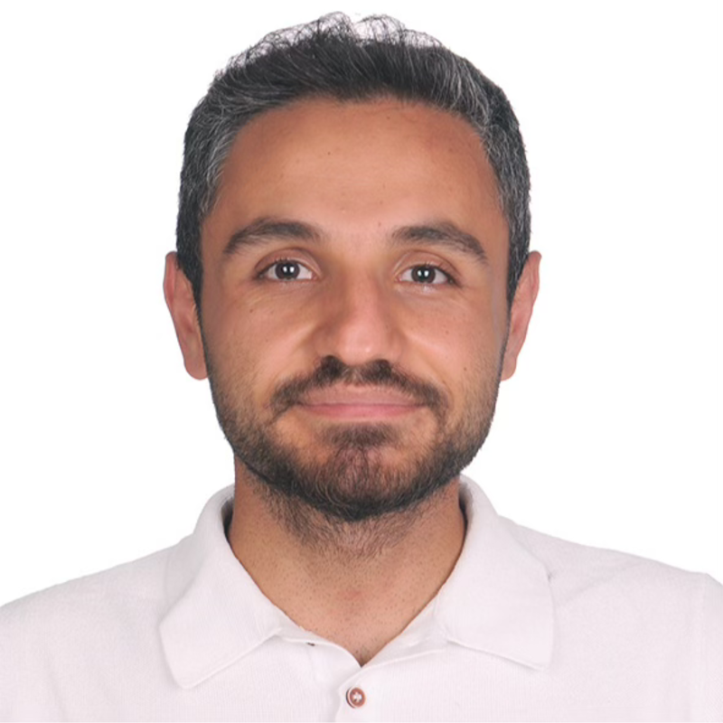

Engin Bozaba · Expert AI Engineer @ Vodafone
Kurumsal yapay zekâyı prototipten üretime taşıyorum.
Telekom, sağlık, sigorta ve siber güvenlikte 7 yılı aşkın süre: ajan tabanlı yapay zekâ, LLM çıkarım optimizasyonu ve MLOps — AWS Certified Solutions Architect.

Hakkımda
Telekomünikasyon, sağlık, sigorta ve siber güvenlik alanlarında kurumsal yapay zekâ çözümlerini ölçeklendiren, 7 yılı aşkın deneyime sahip bir yapay zekâ mühendisiyim.
Çalışmalarım ajan tabanlı ve üretken yapay zekâyı — çok kipli mimari, ML ve LLM orkestrasyonu, kurumsal yönetişim — bunları mümkün kılan yüksek başarımlı hesaplama ile birlikte kapsıyor: CUDA çekirdek geliştirme ve LLM çıkarımı için eğitim sonrası nicemleme. Altyapı tarafında petabayta yakın veri hatları kurdum, maliyetleri 5 kata varan oranda düşürdüm ve dağıtımı NVIDIA NGC ile Docker üzerinde standartlaştırdım.
Bahçeşehir Üniversitesi'ndeki yüksek lisans araştırmam, büyük dil modellerinin modern GPU mimarilerinde verimli çıkarımı için eğitim sonrası nicemleme üzerineydi. Çoğunluğu hesaplamalı patoloji alanında olmak üzere 7 hakemli yayınım ve 150'den fazla atıfım bulunuyor.
Ayrıca yazıyor ve eğitim veriyorum. "Python ile Uçtan Uca Veri Bilimi" kitabının yazarıyım; 50 ülkeden 20.000'den fazla öğrenciye ders verdim ve 200'ü aşkın profesyonele kurumsal eğitim sundum. 2022'den bu yana Makine Öğrenmesi kategorisinde AWS Community Builder'ım.
Deneyim
-
Mar 2025 – Günümüz
Expert AI Engineer
Vodafone
- Ajan tabanlı ve üretken yapay zekâ: mimari, orkestrasyon ve ölçeklendirme.
- Maliyet ve verimlilik optimizasyonu; GPU ve token başarımını en üst düzeye çıkarma.
- Kurumsal yapay zekâ yönetişimi: güvenlik, uyumluluk ve koruma bariyerleri.
- Kurum içi Üretken Yapay Zekâ ve Ajan Tabanlı Yapay Zekâ eğitim serisini 135 çalışma arkadaşıma sundum.
-
May 2024 – Mar 2025
Expert AI Engineer
Neova Sigorta
- Model geliştirme yaşam döngüsünü 7 kat hızlandıran bir MLOps platformu kurdum.
- Dağıtım süresini 3 kat, kaynak kullanımını 5 kat azaltan bir pipeline kütüphanesi oluşturdum.
- Sürücü uyku hâli tespiti için gerçek zamanlı derin öğrenme geliştirdim.
- Siber saldırı savunması için gerçek zamana yakın ve toplu anomali tespiti hatları tasarladım.
-
May 2022 – May 2024
Senior AI Engineer
Virasoft Corporation
- 10'dan fazla birinci basamak hastanede yapay zekâ sistemlerini devreye aldım; sistem tasarımını ve klinik iş akışı entegrasyonunu yönettim.
- CUDA çekirdek geliştirme ve GPU optimizasyonuyla çıkarım gecikmesini 20 kat düşürdüm.
- Hibrit bulut ve küme altyapısını yönettim; AWS ile şirket içi dağıtık depolama ve hesaplama kaynaklarını yüksek erişilebilirlik için ölçeklendirdim.
-
May 2020 – May 2022
AI Engineer
Virasoft Corporation
- Dijital patoloji için üretim ortamında nesne tespiti ve bölütleme modelleri geliştirdim.
- Petabayta yakın veri hatlarını yönettim; MLOps ve S3 sistemlerini sıfırdan kurdum.
- Yüksek başarımlı NVIDIA NGC ve Docker ortamlarıyla dağıtımları standartlaştırdım.
-
Ara 2019 – May 2020
AI Intern
Virasoft Corporation
- Derin öğrenme modelleri için PyTorch tabanlı veri yükleme ve ön işleme kütüphanesi geliştirdim.
- Histopatoloji görüntülerinde referans dokuya boya normalizasyonu uyguladım.
Eğitim
-
2023 – 2025
Yüksek Lisans, Yapay Zekâ Mühendisliği
Bahçeşehir Üniversitesi
Not ortalaması 3.88/4.00. Tez: Büyük dil modellerinin modern GPU mimarilerinde verimli çıkarımı için eğitim sonrası nicemleme.
-
2016 – 2020
Lisans, Biyomedikal Mühendisliği
İnönü Üniversitesi
Not ortalaması 3.66/4.00. 65 kişi içinde 2. sırada. Yüksek Onur Belgesi.
Sertifikalar
- AWS Certified Solutions Architect – Associate
- NVIDIA Certified Associate — AI in the Data Center
- Agentic AI Nanodegree
- AWS Community Builder, Makine Öğrenmesi